Bridge Coach vous aide à progresser à partir des donnes que vous jouez : il lit le tournoi du club enregistré par Bridgemate, vous montre ce qui s'est passé à chaque table, vous fait rejouer les donnes contre des robots et vous explique, donne par donne, ce qu'il fallait annoncer et jouer. Il sert aussi à faire cours.
Après un tournoi, voici le chemin le plus court, du fichier de Bridgemate à votre rapport :
Chaque étape a sa page dans cette aide. À gauche, les pages sont rangées selon ce que vous voulez faire : Revoir un tournoi, S'entraîner, Faire cours. Les images de l'aide s'agrandissent d'un clic.
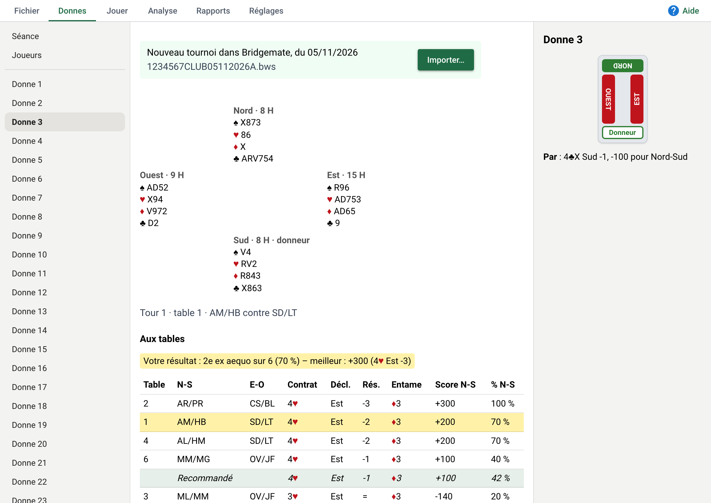
Tout part de la barre du haut :
Le bouton Aide, en haut à droite, ouvre l'aide à l'endroit qui parle de la page où vous êtes. Le petit ? bleu à côté du titre d'une page fait de même.
Une donne choisie dans un onglet reste choisie dans les autres. Bridge Coach se rouvre là où vous l'avez laissé : la même séance, le même onglet, la même donne.
Onglet Réglages, Taille du texte : Normale, Grande (125 %) ou Très grande (150 %). Toute la fenêtre grandit, le texte comme les cartes. C'est utile si vous voyez moins bien, ou pour montrer Bridge Coach sur une télévision.
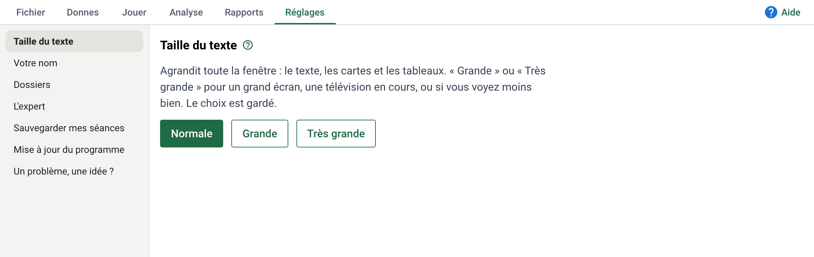
Après le tournoi, importez-le : Bridge Coach en fait une séance, un seul fichier qui contient tout (les donnes, les joueurs, les résultats et les analyses).
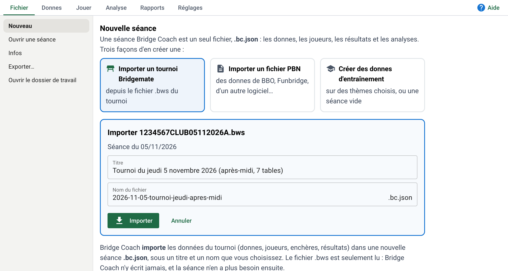
Le fichier de Bridgemate (.bws) est seulement lu : Bridge Coach n'y écrit jamais et n'en fait pas de copie. Une fois importée, la séance n'en a plus besoin. Si vous importez à nouveau le même tournoi, Bridge Coach le reconnaît et met la séance à jour, sans perdre ses analyses ni vos parties.
Onglet Fichier, Ouvrir une séance. Les séances sont rangées par mois, la plus récente en haut. Le mois de la séance ouverte est déplié ; cliquez un autre mois pour voir ses séances, puis cliquez la séance voulue.
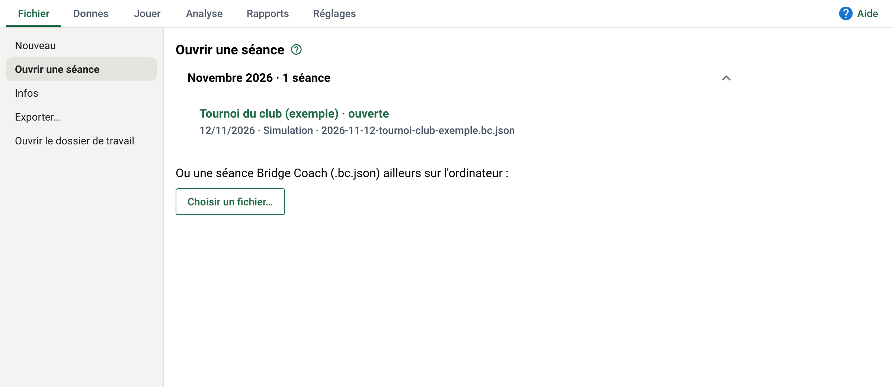
Le titre de la séance ouverte s'affiche en haut de la fenêtre.
Onglet Fichier, Infos : tout ce qu'on sait de la séance ouverte, et ce qu'on peut en faire.
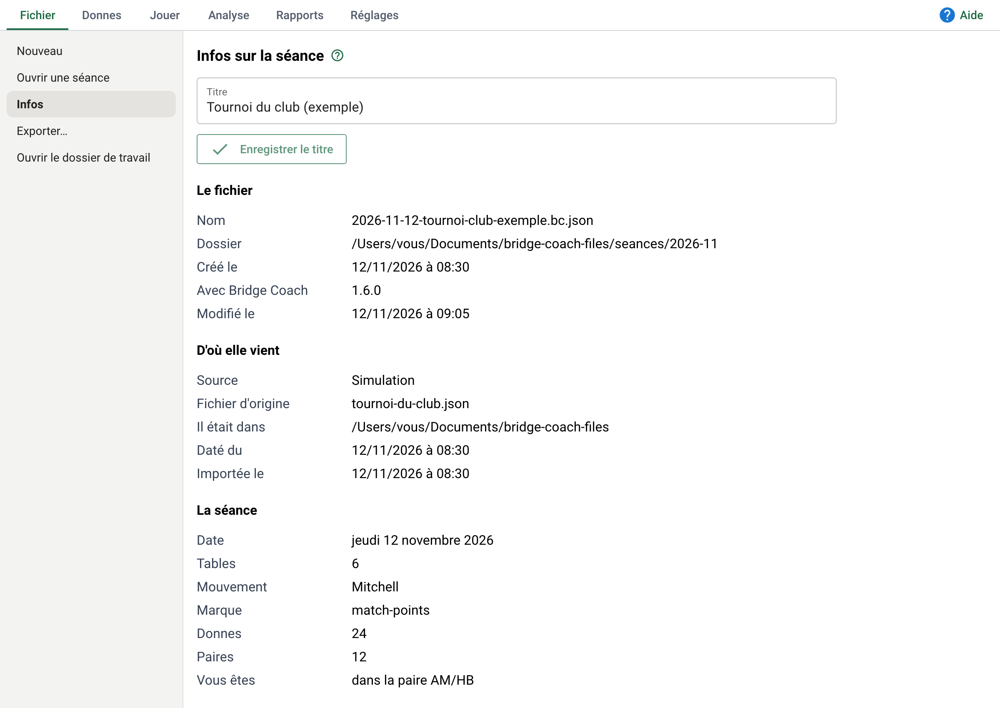
Une séance importée avant l'arrivée des titres reçoit une proposition de titre et de nom : Utiliser ces propositions les applique d'un coup.
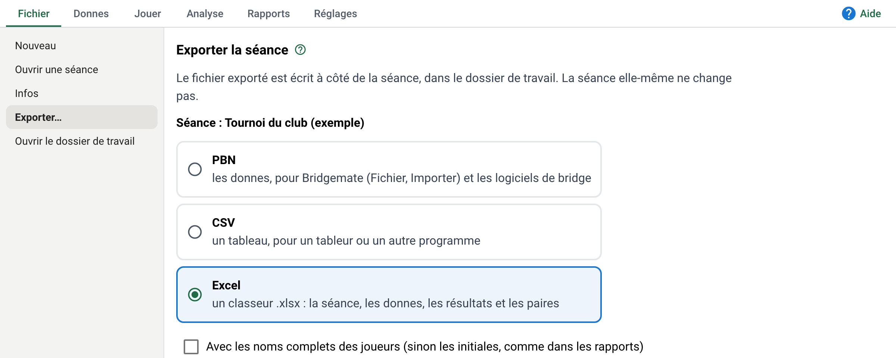
Les joueurs y sont en initiales, comme dans les rapports. Cochez Avec les noms complets pour un fichier qui reste chez vous. Le fichier est écrit à côté de la séance ; la séance ne change pas.
Les analyses de l'expert ne se refont pas : gardez-en une copie. Onglet Réglages, Sauvegarder mes séances, puis Sauvegarder mes séances… : Bridge Coach fait un seul fichier .zip et vous demande où l'enregistrer. Copiez-le ensuite sur une clé USB ou un dossier en ligne. La page rappelle la date de la dernière sauvegarde ; si elle a plus d'un mois, un rappel s'affiche en haut de Ouvrir une séance.
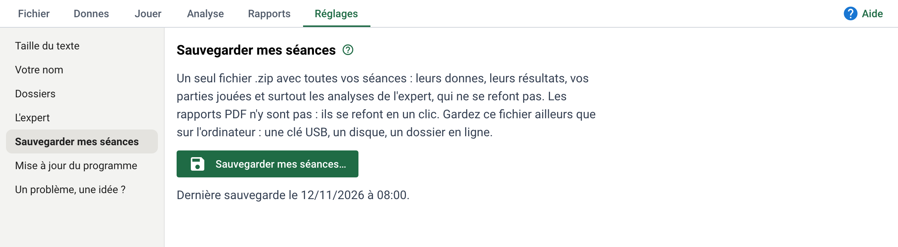
Dans le dossier bridge-coach-files de vos Documents (Fichier, Ouvrir le dossier de travail) :
seances : vos séances, une par fichier .bc.json, rangées par mois. Leur nom commence par la date : 2026-11-05-tournoi-jeudi-apres-midi.bc.json.rapports : les rapports PDF, rangés par mois.corbeille : les séances mises à la corbeille.L'onglet Donnes montre le tournoi tel qu'il a été joué : les mains, les enchères et le résultat de chaque table, et votre place.
Cliquez une donne dans la liste de gauche. Vous voyez les quatre mains, le donneur et la vulnérabilité, puis le résultat de chaque table, avec ses enchères quand les Bridgemate les ont enregistrées. À droite, le double mort et le par.
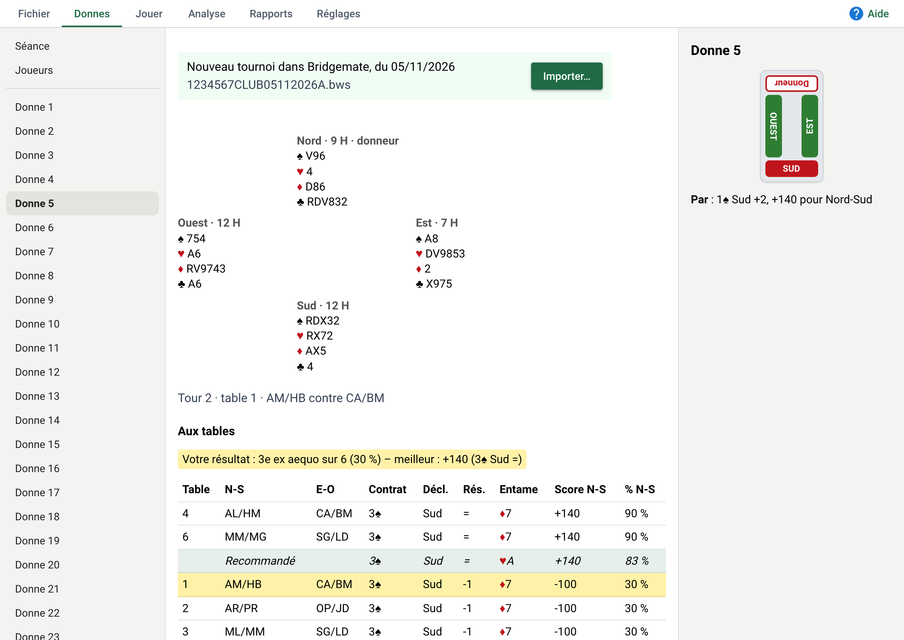
Les tables sont rangées du meilleur résultat au moins bon, vu de votre camp. Une ligne verte pâle montre le contrat recommandé, à la place qu'il aurait prise parmi les tables.
Choisissez votre nom une fois pour toutes, tel que la FFB l'écrit (« MARTIN Anne ») : après votre premier import, Bridge Coach vous le demande (« Qui utilise Bridge Coach ? »), et vous pouvez le changer dans l'onglet Réglages, Votre nom. C'est facultatif : sans nom, vous êtes « inconnu », et Bridge Coach marche aussi, sans surligner vos tables. Votre table est alors surlignée en jaune, et une ligne au-dessus du tableau donne votre rang et votre pourcentage.
Bridge Coach vous reconnaît par votre numéro de licence FFB, que Bridgemate enregistre avec chaque joueur : même si votre nom est écrit autrement d'un tournoi à l'autre (un accent, un nom d'usage), c'est bien vous. La page Votre nom montre votre licence. Elle reste sur votre ordinateur, comme le nom des joueurs.
Pour regarder la séance avec les yeux d'un autre joueur, changez Vous êtes dans l'onglet Rapports.
Quand Bridgemate a enregistré le mouvement (un Mitchell, par exemple, avec une table relais), la page Séance, en haut de la liste de gauche, montre votre parcours : pour chaque tour, la table, les donnes, vos adversaires et votre pourcentage.
La marque vient du fichier importé. Si elle est fausse, changez-la sur la page Séance : les rapports et les analyses la suivent.
L'analyse dit, pour chaque donne, ce qu'il fallait annoncer et comment jouer, sans regarder les mains cachées, comme un bon joueur à la table. Le rapport montre où vous avez perdu des points.
Cliquez une donne à gauche. Elle se lit de haut en bas, comme sa page du rapport :
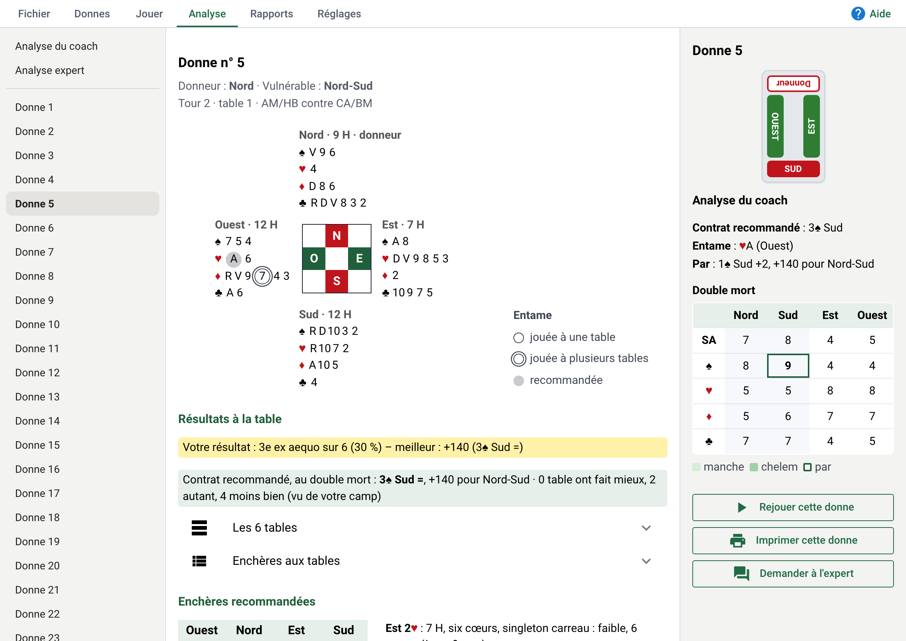
Le bouton Coach | Expert, à droite, passe d'une analyse à l'autre. En dessous :
L'analyse de l'expert est écrite par Claude, une intelligence artificielle, sur le site claude.ai. Dans l'onglet Analyse, cliquez Analyse expert en haut de la liste : les étapes sont à l'écran, avec un bouton pour chacune.
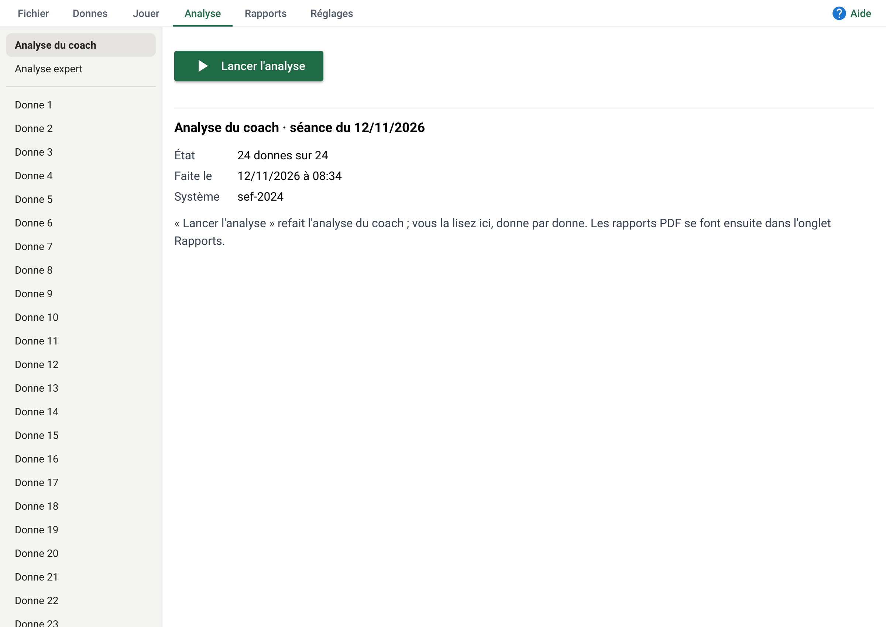
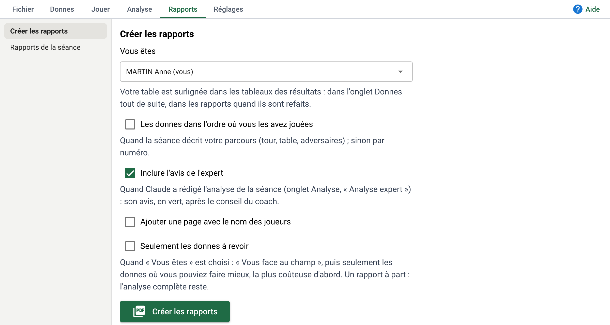
Les options : les donnes dans l'ordre où vous les avez jouées, l'avis de l'expert (coché d'office), et une page avec le nom des joueurs (sinon, les initiales seulement). Seulement les donnes à revoir fait un rapport court, avec les donnes où vous pouviez faire mieux.
Le rapport s'ouvre sur Vous face au champ : une ligne par donne. La barre part de la moyenne des tables et va jusqu'à votre score : en rouge ce que vous perdez, en bleu ce que vous gagnez.
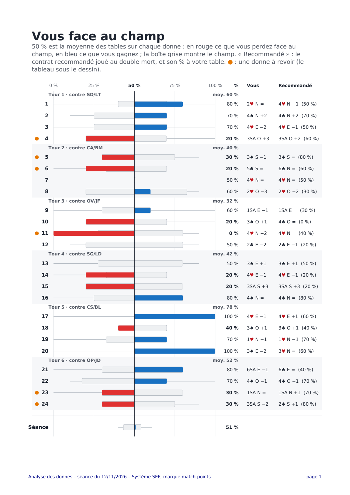
Puis Où vous pouviez faire mieux : les donnes à revoir, la plus coûteuse d'abord. Une donne y entre par les enchères (votre contrat face au contrat recommandé) ou par le jeu de la carte (vos levées face au meilleur jeu, seulement quand une autre table a fait mieux dans le même contrat). Vos meilleurs coups sont nommés aussi. Cliquez un numéro de donne pour y aller.
Rejouez le tournoi d'hier donne par donne, puis voyez où vous seriez classé face au club. Pour jouer une donne, voir « Jouer contre les robots ».
Rejouez le tournoi donne par donne, puis ouvrez Classement, sous Options : « Vous : 54,2 % — 3e sur 11 paires ». Une donne compte quand vous l'avez jouée jusqu'à la dernière levée ; votre score vient des levées vraiment faites. Tant que des donnes restent à jouer, le classement est provisoire.
Dans l'onglet Jouer, vous jouez chaque donne contre trois robots : vous enchérissez, puis vous jouez la carte comme déclarant ou en défense. Les robots ne voient pas vos cartes. Cela marche pour les donnes d'un tournoi comme pour celles d'un entraînement.
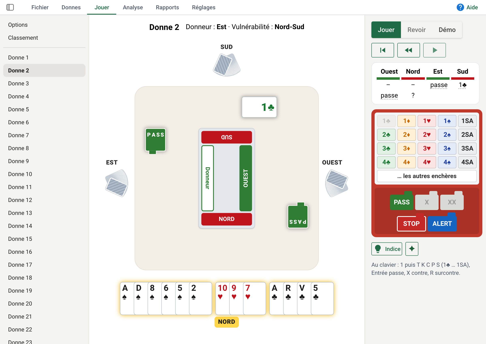
Pour jouer une autre place, ouvrez Options, en haut de la liste : le déclarant (au départ), la défense, une place fixe, ou comme un joueur de la séance, à la place où il était assis ce soir-là.
Après les enchères, l'entame est faite et le mort s'étale. Cliquez la carte à jouer, dans votre main ou au mort. Quand c'est à vous, les cartes que vous jouez sont surlignées en jaune. Si une carte ne peut pas être jouée (vous devez fournir), elle tremble et reste en place.
À la fin, la barre de droite compare votre contrat à celui que recommande l'analyse, et votre jeu de la carte au meilleur jeu possible. Voir pourquoi vous montre la carte qui a coûté une levée ; Donne suivante continue.
Quand l'autre camp gagne les enchères, vous défendez avec un robot pour partenaire. Si c'est à vous d'entamer, choisissez votre carte. Le mort s'étale sur le côté. Votre partenaire signale comme le prévoit le système : sur votre entame, parité en continuation, préférence en défausse.
Une fois la donne finie, Revoir (en haut à droite, à côté de Jouer) rejoue votre partie carte par carte, les quatre mains visibles, avec ce que pensait chaque robot : pourquoi il a choisi sa carte, et ce qu'il croyait des mains cachées. À la dernière carte, le résumé de la donne. ▶ avance, ◀◀ recule, ⏮ revient au début.
Bridge Coach fabrique des donnes sur les thèmes que vous voulez travailler, ou vous laisse taper les vôtres. Elles se jouent et s'analysent comme un tournoi.
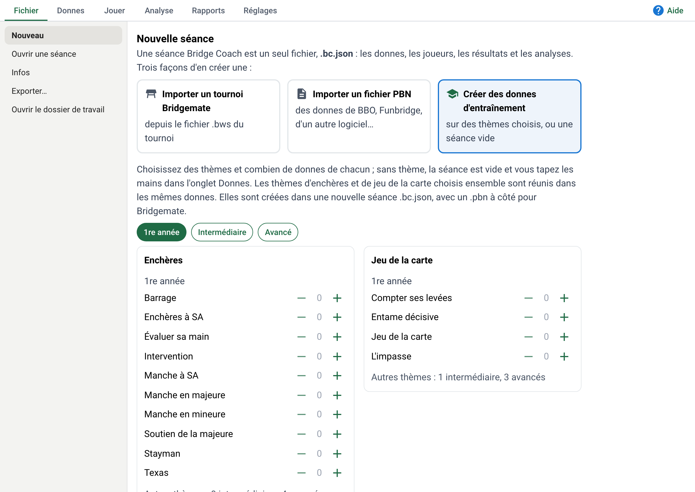
Un thème d'enchères et un thème de jeu de la carte choisis ensemble se retrouvent dans les mêmes donnes. Un thème rare peut prendre plusieurs minutes ; s'il n'est pas trouvé à temps, la donne est tirée au hasard et Bridge Coach le dit. Un fichier .pbn est écrit à côté, pour faire distribuer les donnes au club (Bridgemate Control Software, Fichier, Importer).
Tout est enregistré dès que vous quittez un champ. Pour changer une donne plus tard : Modifier la donne. Bridge Coach garde des copies de la séance : la page Séance les liste, et Restaurer en remet une. Seules les séances créées dans Bridge Coach se modifient ; les donnes d'un tournoi restent celles qui ont été jouées.
Une question sur une donne ? L'expert, une intelligence artificielle, vous répond comme un professeur, pendant la donne ou après.
Une donne vous intrigue ? Demandez à l'expert, comme à un professeur. Le bouton Demander à l'expert est dans la barre de droite de Jouer (pendant la donne et à la fin) et dans Analyse.
Pendant la donne, l'expert ne voit que ce que vous voyez : votre main, le mort, les enchères et les cartes jouées. Il vous aide à réfléchir sans vous dire les mains cachées. À la fin, il voit tout : les quatre mains, l'analyse et les résultats du club.
Dans Réglages, L'expert : l'adresse de votre outil (par exemple https://claude.ai/new ou https://chatgpt.com), et le prénom par lequel il vous salue. Ce prénom est le seul nom qui part chez l'expert ; les autres joueurs n'y sont que par leurs initiales. Laissez-le vide pour rester anonyme.
Pour l'enseignant : préparer les donnes d'une leçon, les montrer pas à pas sur un grand écran, et les distribuer sur papier.
Choisissez les donnes de votre leçon, selon ce que vous voulez montrer :
Lancez l'analyse avant le cours (onglet Analyse) : la démonstration suit alors les enchères recommandées et vous avez le commentaire de chaque donne sous les yeux.
Le mode Démo (en haut à droite : Jouer | Revoir | Démo) montre une donne pas à pas, les quatre mains ouvertes : les enchères recommandées, puis le jeu des robots. Chaque pas est expliqué dans la barre de droite.
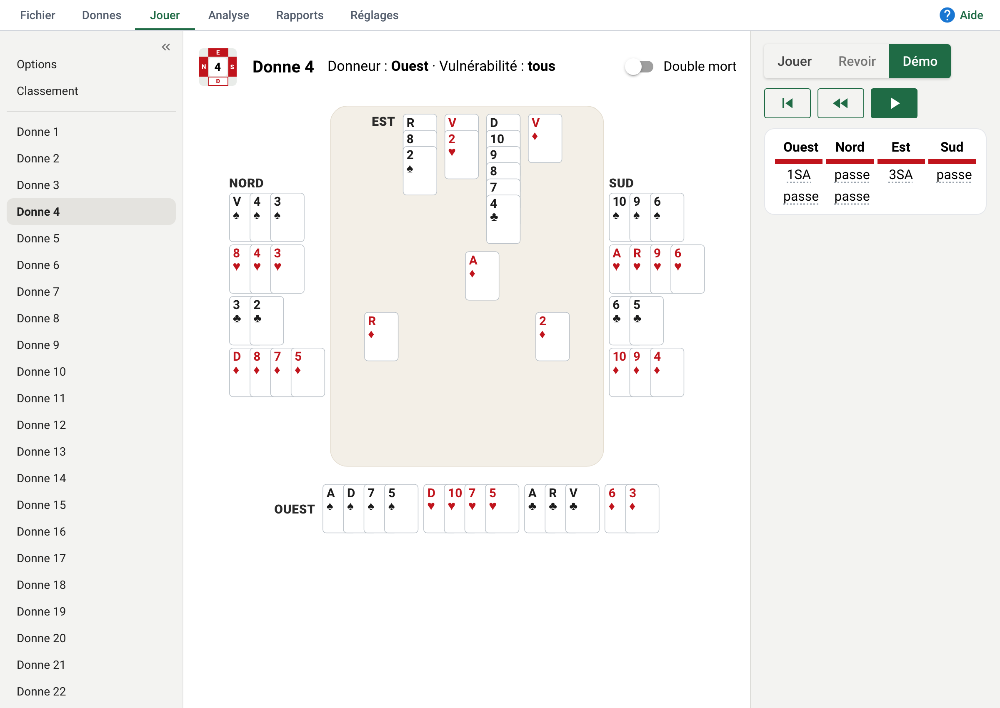
Pour que tout le monde voie bien, du fond de la salle :
L'onglet Réglages : vous, vos séances, le programme.
Les pages de l'onglet Réglages sont rangées en trois groupes.
Vous
Vos séances
.zip de toutes vos séances (voir « Importer et retrouver vos tournois »).Le programme
Onglet Réglages, Mise à jour et nouveautés, Rechercher une mise à jour. S'il y en a une, Mettre à jour vers … : Bridge Coach se ferme, se met à jour en une minute environ et se rouvre. Vos séances et vos rapports ne changent pas.
Après la mise à jour, une petite fenêtre dit ce qui a changé. La même page, Mise à jour et nouveautés, montre en dessous ce qui a changé à chaque version, la plus récente en haut.
github.com/wfisk/bridge-coach/releases, téléchargez Bridge-Coach-Setup.exe (Windows 10 ou 11) ou Bridge-Coach.pkg (Mac).Bridge Coach arrive sur le Bureau. Au premier lancement sur Mac, acceptez l'accès au dossier Documents.
derniere-erreur.txt : signalez le problème (ci-dessous) et joignez-le.Bridge Coach se discute sur GitHub, le site où vit son programme. Tout le monde peut lire ; pour écrire, il faut un compte GitHub, gratuit. Écrivez en français.
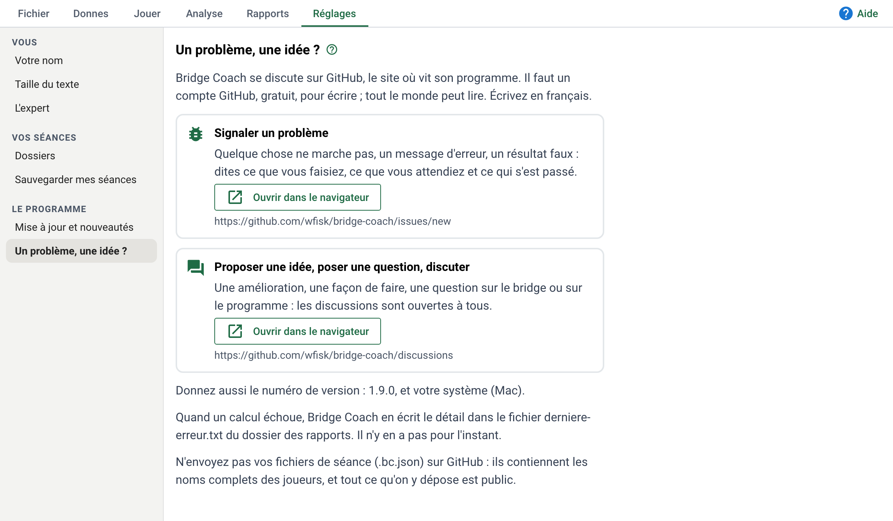
github.com/wfisk/bridge-coach/issues) : dites ce que vous faisiez, ce que vous attendiez et ce qui s'est passé, avec le numéro de version et votre système (Mac ou Windows). Proposer une idée, poser une question, discuter (github.com/wfisk/bridge-coach/discussions) : tout le reste.derniere-erreur.txt dans votre message. Il ne contient que le détail technique de l'erreur, pas vos séances ni le nom des joueurs..bc.json) sur GitHub : ils contiennent le nom des joueurs, et tout ce qu'on y dépose est public.Windows : Paramètres, Applications, Applications installées, Bridge Coach, Désinstaller. Mac : mettez à la corbeille Bridge Coach dans Applications, son lien sur le Bureau, et le dossier ~/Library/Application Support/Bridge Coach.
Vos séances (bridge-coach-files, dans Documents) restent : supprimez-les vous-même si vous le voulez, après une sauvegarde.